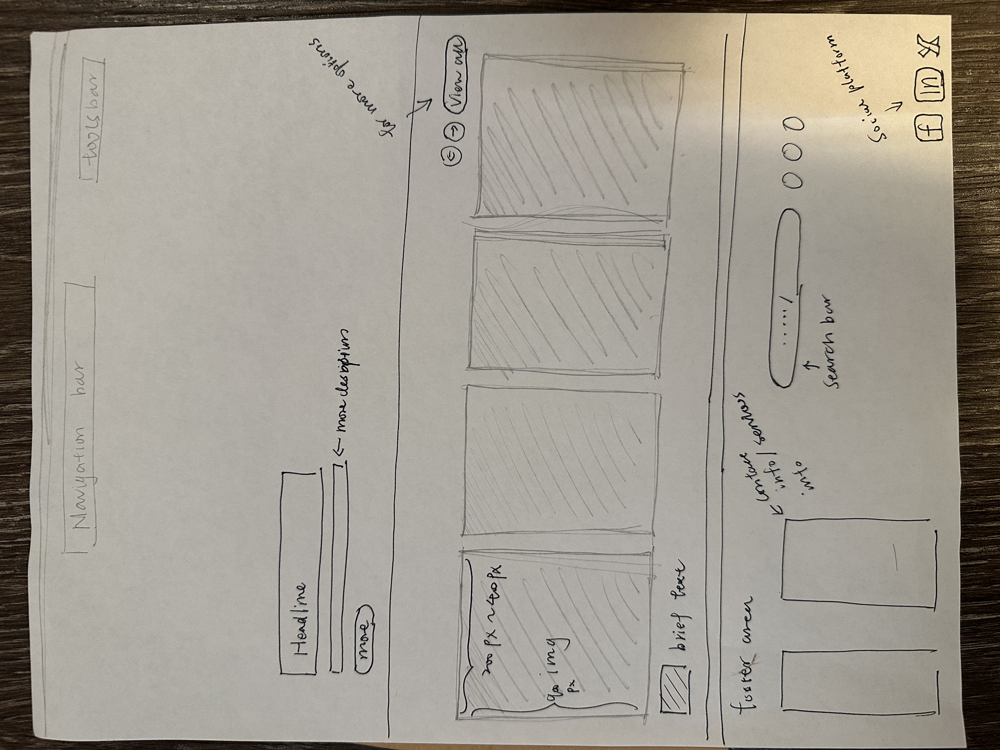

Learning Journal 1
After reading this article on best practices for form design, I found it highly practical and relevant to my current projects. The article emphasizes that form design is not just a tool for gathering information but a critical part of the overall user experience. This made me reflect on how users feel when they interact with forms—if poorly designed, they might experience frustration. Concepts like grouping form fields, simplifying the steps, and using pre-filled information really stand out as effective ways to reduce users' cognitive load, making forms easier to use.
I also really like the advice to "avoid unnecessary questions" and "provide immediate feedback." In my design process, I often focus on streamlining interactions, but this article reminded me how real-time feedback can make users feel supported and engaged, which ultimately contributes to a more positive experience. It highlights that even something as simple as a form should be designed with the user's perspective in mind. It's not just about getting the task done; it's about enhancing the user’s emotional connection to the product by reducing frustration and increasing satisfaction.
Overall, this article reinforces the idea that form design plays a crucial role in user experience, and applying these best practices can lead to more intuitive and user-friendly interfaces.
https://www.goodmoodprints.io/I really enjoy the design composition of this website. The overall layout is very simple with minimal decorations. Also the interactive usability is very functional, each section having a navigation tool bar on its top to flip the pages.
